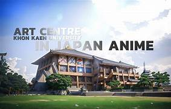

หอศิลป์ มหาวิทยาลัยขอนเเก่น
หากคุณชอบเสพงานศิลป์ล่ะก็ ใกล้กันกับพิพิธภัณฑ์ธรรมชาติวิทยา มีสถานที่ที่น่าสนใจอีกหนึ่งแห่งนั่นก็คือ หอศิลป์ มหาวิทยาลัยขอนแก่น
หากคุณชอบเสพงานศิลป์ล่ะก็ ใกล้กันกับพิพิธภัณฑ์ธรรมชาติวิทยา มีสถานที่ที่น่าสนใจอีกหนึ่งแห่งนั่นก็คือ หอศิลป์ มหาวิทยาลัยขอนแก่น
หมู่บ้านงานคราฟท์ติด ม.ขอนแก่น โลเคชั่นถนนโคลัม ซอย 1 โดยกลุ่มเพื่อนที่รักงานศิลปะ มีบ้านไม้เป็นหลังๆ บรรยากาศร่มรื่น เต็มไปด้วยต้นไม้สีเขียว สถานที่น่ารัก ตกแต่งดี ทำให้มีมุมถ่ายรูปเพียบ ด้านในมีร้านค้าและกิจกรรมหลายอย่างให้ทำ อาทิ เวิร์คช็อปปั้นเซรามิค จาก Chu.pot ceramics, งานย้อมผ้าจากสีใบไม้ โดย Small and Smell Craft Studio, เวิร์คช็อปงานไม้แบบง่าย ทำกรอปรูป และของที่ระลึกจากไม้, เวิร์คช็อปทำเทียนหอม ระบายสีน้ำจากธรรมชาติ, เวิร์คช็อปสมุดทำมือ ทำคุ้กกี้ดอกไม้กินได้ ศิลปะการตัดแปะกระดาษ
วัดสวยนามว่า วัดทุ่งเศรษฐี ตั้งอยู่ในตำบลพระลับ อำเภอเมืองขอนแก่น จังหวัดขอนแก่น เป็นวัดที่มีความสวยงามมาก ริเริ่มสร้างโดย หลวงตาอ๋อย (สวาสดิ์ ศีลอุดมทรัพย์) ในปี พ.ศ. 2542 บนเนื้อที่กว่า 70 ไร่ หลวงตาท่านมีที่ดินเก็บเก่า ราว 5 ไร่ ได้ไปสำรวจ จนเกิดญาณวิถีขึ้นว่า เป็นผืนดินศักดิ์สิทธิ์ “ผืนดินสามโลกธาตุ” เป็นพื้นที่บรรจบกันระหว่าง 3 โลก คือ สวรรค์ โลกมนุษย์ และโลกบาดาล ท่านจึงร่วมมือกับลูกศิษย์ซื้อที่ดินเพิ่ม เพื่อสร้างเป็นวัด โดยตรงจุดสำคัญสามโลกธาตุ